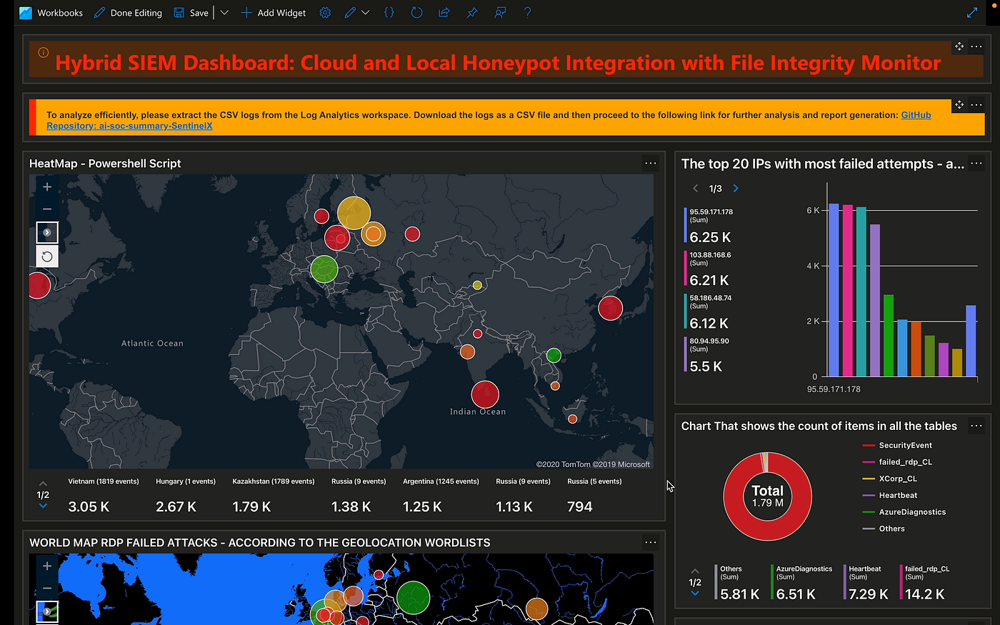
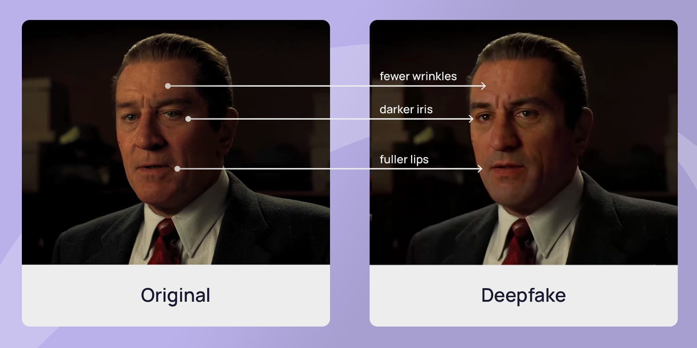

Topics Covered
AI-Powered Threat Detection Systems
AI can analyze millions of events per second to identify patterns that indicate a cyberattack — something impossible for humans to do manually. Machine learning models are trained on past attacks to recognize and block new threats in real time.

Money Threats, Scams & Online Fraud
Online financial fraud is one of the fastest-growing forms of cybercrime. Attackers use increasingly sophisticated methods to steal money and financial data from individuals and businesses.
- Phishing — fake emails/sites stealing banking credentials
- Vishing — phone call scams pretending to be banks
- Smishing — SMS-based fraud with fake links
- Cryptocurrency Scams — fake investment platforms

Detecting Fake Media – Images, Videos & Audio
AI can now generate incredibly realistic fake images, videos (deepfakes), and audio. This poses major risks to trust, security, and democracy. Fortunately, other AI tools are being developed to detect this fake content.
Detection Methods
Pixel inconsistencies & blur edges
Unnatural tone & frequency patterns
Deepware, Microsoft Video Authenticator
Trace image origin using Google Images

AI & Cybersecurity Games – Learning Through Simulation
Cybersecurity games and simulations are interactive ways to practice real-world skills in a safe environment. From CTF challenges to AI-powered simulators, these tools helped me apply what I learned.
How the Internet Analyzes Websites & Detects Risks
There are tools and systems that automatically scan websites for security vulnerabilities, malicious code, and suspicious behavior. This protects users before they even visit a site.